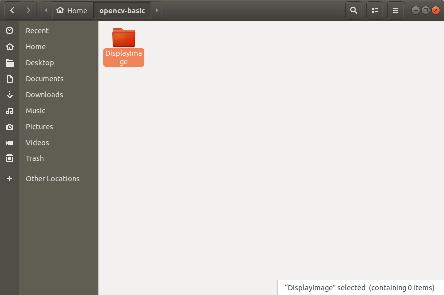
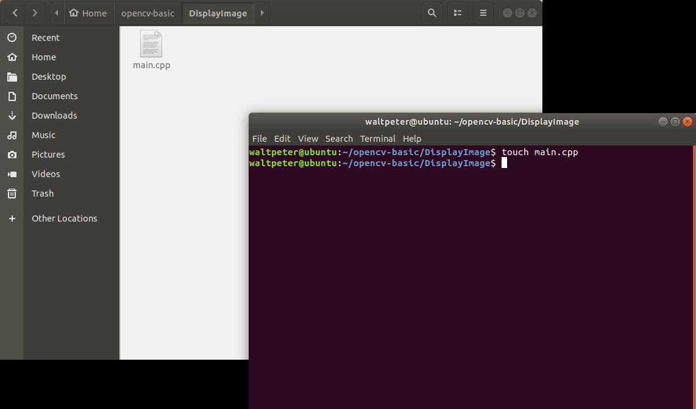
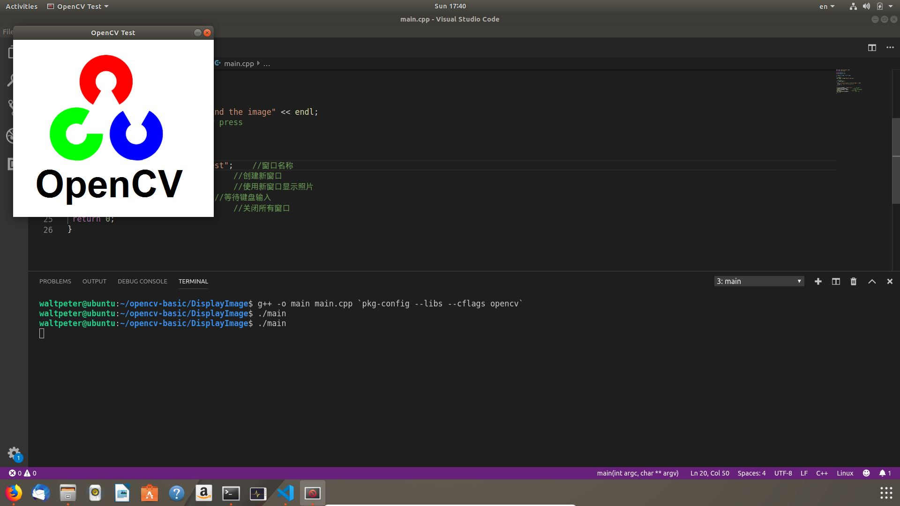
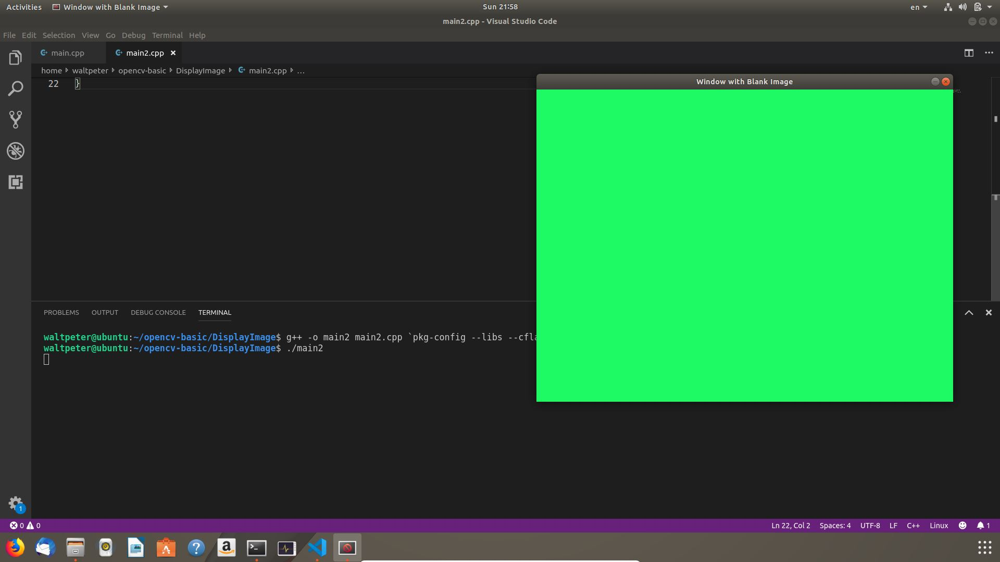

从文件载入并显示图像
在本节中，我将展示如何从文件加载图像并使用OpenCV库函数在窗口中显示图像。首先在任意的文件夹中右键创建新的文件夹，我把它命名为DisplayImage，可以使用任意名。
双点进入新建的文件夹，在文件夹内右键打开一个终端(terminal)，或者Ctrl+Alt+T然后cd到你的文件夹内。
输入一下命令新建main.cpp文件。
touch main.cpp一个名为main.cpp的文件就会被生成在文件夹中。
使用任意IDE打开main.cpp，将以下的代码复制并粘贴到IDE中并储存。
#include <opencv2/opencv.hpp>
#include <iostream>
using namespace cv;
using namespace std;
int main(int argc, char** argv)
{
//读取照片
Mat image = imread("OpenCV_Logo.png");
//检测失误
if (image.empty())
{
cout << "Could not open or find the image" << endl;
cin.get(); //等待键盘输入
return -1;
}
String windowName = "OpenCV Test"; //窗口名称
namedWindow(windowName); //创建新窗口
imshow(windowName, image); //使用新窗口显示照片
waitKey(0); //等待键盘输入
destroyWindow(windowName); //关闭所有窗口
return 0;
}
打开一个终端cd到你的工作文件夹(也可以用刚刚使用的终端)，输入以下命令编译并运行代码：
g++ -o main main.cpp `pkg-config --libs --cflags opencv`
./main

解说
让我们逐行解释上面代码。#include <opencv2/opencv.hpp>opencv2/opencv.hpp头文件本身将包含OpenCV库中的所有其他必要头文件。include此头文件才能编译OpenCV代码。有关更多信息，请参阅OpenCV C ++ API。
#include <iostream>
还应该包含iostream头文件，因为我们在程序中使用cout和cin来向终端输出错误消息。
using namespace cv;所有OpenCV函数、类(class)和数据结构都在cv名称空间内声明。因此，我们必须在程序的顶部添加'using namespace cv'行。否则，我们必须在每个OpenCV函数，类和数据结构之前附加'cv ::'说明符。（例如 cv::Mat，cv::imread()等）。有关更多信息，请参阅OpenCV C ++ API。
using namespace std;
我们还必须使用std命名空间，因为cout、endl和cin函数都在std命名空间内。
Mat image = imread("OpenCV_Logo.png");
这个函数从“OpenCV_Logo.png”中读取图像并返回Mat矩阵。在你的代码中需要把"OpenCV_Logo.png"更改至自己使用的图像的地址。
Mat imread(const String &filename], int flags = IMREAD_COLOR)
此函数从指定文件加载图像，并返回作为Mat对象。如果函数无法读取文件，它将返回一个空的Mat对象。
如果imread()函数无法加载图像，则返回的Mat对象将为空。如果Mat对象为空，则image.empty()函数将返回true。在这种情况下，我们的程序将向终端输出错误消息并等待任何按键操作。当用户按下键盘上的任意键时，程序将退出返回-1。检查图像是否为空并退出程序是一种很好的做法。否则，您的程序将在尝试执行imshow()函数时崩。此函数从指定文件加载图像，并返回作为Mat对象。如果函数无法读取文件，它将返回一个空的Mat对象。
- filename - 您必须提供图像文件的相对或绝对路径。如果您提供相对路径，则它应该与您的cpp文件相关。始终支持jpeg，jpg，bmp，png，tiff和tif图像文件类型。支持其他映像文件类型，具体取决于您的平台和已安装的编解码器。
- flags - flag参数有几个可选的值。在上面的程序中，我没有向该参数传递任何值，因此将使用默认的IMREAD_COLOR参数。
-
- IMREAD_UNCHANGED - 图像将按原样加载。如果要在输入图像中获取alpha通道（如果可用），则必须使用此标志。
- IMREAD_GRAYSCALE - 图像将作为灰度图像加载（即 - 单通道图像，黑白图像）
- IMREAD_COLOR - 图像将作为BGR图像加载（即 - 3通道图像，彩色图像）
namedWindow(windowName); //创建新窗口这函数用来创造叫做"OpenCV Test"的窗口。
void namedWindow(const String &winname], int flags = WINDOW_AUTOSIZE) 此功能创建一个窗口，可用于放置图像和轨迹(trackbar)栏。如果已存在相同名称的窗口，此函数则不会执行任何操作。
- winname - 窗口名称。该名称将显示在新创建的窗口的标题栏中。此名称也是此窗口的标识符，它将在稍后的OpenCV函数调用中用于标识窗口。
- flags - 设置窗口的大小。在上面的程序中，我没有向该参数传递任何值，因此将使用默认的WINDOW_AUTOSIZE参数。
- WINDOW_AUTOSIZE - 用户无法调整窗口大小。图像将以原始大小显示。
- WINDOW_NORMAL - 用户可以调整窗口大小。
imshow(windowName, image); //使用新窗口显示照片这个函数将图像在刚刚创建的窗口中显示。
void imshow(const String &winname, InputArray mat) 此函数在winname指定的窗口中显示图像。如果使用WINDOW_AUTOSIZE标志创建窗口，则图像将以其原始大小显示。否则，图像可以缩放到窗口的大小。如果尚未通过调用namedWindow（）函数创建窗口，则此函数将创建一个带有WINDOW_AUTOSIZE标志的窗口。 调用此函数之后需要有个waitKey(int)函数，以便提供足够的时间在窗口中绘制和显示指定持续时间（以毫秒为单位）的图像。如果不调用waitKey(int)函数，则图像不会显示在窗口中(程序会崩)。
- winname - 由namedWindow()函数创建的窗口的名称。
- mat - 保存图像的Mat对象。
waitKey(0); //等待键盘输入waitKey(0)函数永远等待按键。按任意键时，此函数返回键的ASCII值，程序将继续。
如果将正值传递给waitKey()函数，它将等待指定时间（以毫秒为单位）内的按键。如果在此期间按下任何键，此函数将返回键的ASCII值，程序将继续。如果在此期间没有按下任何键，它将返回-1并且程序将继续。
仅当程序打开至少一个活动的highgui窗口时，此功能才有效。
destroyWindow(windowName); //关闭所有窗口此函数关闭所有由windowName标识的已打开窗口，并取消任何关联的内存。
摘要
在上一节中，你学会了：
在上一节中，你学会了：
- 如何从文件加载图像
- 如何在加载图像失败时处理错误情况
- 如何创建窗口并显示图像
- 如何在不退出程序的情况下等待，直到用户按下某个键
- 如何销毁创建的窗口
创建空白图像并显示
以下程序与之前的程序非常相似。唯一的区别是该程序创建一个空白图像，而不是从文件加载现有图像。
#include <opencv2/opencv.hpp>
#include <iostream>
using namespace cv;
using namespace std;
int main(int argc, char** argv)
{
//创建以下条件的图像
//3 通道
//图像深度 8 bits
//800 x 600 辨识度(800宽600高)
//每个像素初始值设置为(100, 250, 30) 即各为蓝、青和红。
Mat image(600, 800, CV_8UC3, Scalar(100, 250, 30));
String windowName = "Window with Blank Image"; //窗口名称
namedWindow(windowName); //创建窗口
imshow(windowName, image); //显示图像
waitKey(0); //等待键盘
destroyWindow(windowName); //毁灭窗口
return 0;
}
创建新文档，将上面的简单代码段复制并粘贴到IDE中并运行它。然后你应该能看到如下图所示的输出。

g++编译时注意cpp文件名称的输入准确和输出可执行文件的名称。 即：g++ -o [这里放可执行文件的命名] [这里放cpp文件的名称].cpp `pkg-config --libs --cflags opencv`
解说
Mat image(600, 800, CV_8UC3, Scalar(100, 250, 30));这是Mat类中可用的众多构造函数之一。它创建一个600像素高，800像素宽的图像。为图像中的每个像素分配24位。24位将由三个无符号8位整数组成，分别代表蓝色，绿色和红色平面。三个整数的值应为0到255。
然后，此构造函数使用3个无符号整数（100,250,30）初始化所创建图像的每个像素。因此，它初始化蓝色通道100，绿色通道250和红色通道30。因为绿色通道的值明显大于其他通道的值，输出图像是绿色的。你可以尝试这三个值的不同组合并查看输出图像。
Mat::Mat(int rows, int cols, int type, const Scalar &s)
此构造函数将创建具有指定行数和列数的Mat对象，并使用s中给定的值初始化每个元素。
- rows - 2D数组中的行数（即 - 图像的高度，以像素为单位）
- cols - 2D数组中的列数（即 - 图像的宽度，以像素为单位）
- type - 2D数组的数据类型，指定每个通道中每个元素的深度和数据类型以及通道数。有关数据类型的更多详细信息，请参见OpenCV C++ API。此参数的可选值为：
- CV_8UC1
- CV_8UC2
- CV_8UC3
- CV_8UC4
- CV_8UC(n)
- CV_8SC1
- CV_8SC2
- CV_8SC3
- CV_8SC4
- CV_8SC(n)
- CV_16UC1
- CV_16UC2
- CV_16UC3
- CV_16UC4
- CV_16UC(n)
- CV_16SC1
- CV_16SC2
- CV_16SC3
- CV_16SC4
- CV_16SC(n)
- CV_32SC1
- CV_32SC2
- CV_32SC3
- CV_32SC4
- CV_32SC(n)
- CV_32FC1
- CV_32FC2
- CV_32FC3
- CV_32FC4
- CV_32FC(n)
- CV_64FC1
- CV_64FC2
- CV_64FC3
- CV_64FC4
- CV_64FC(n)
- s - 像素初始值
摘要 在上一节中，你学习了如何创建所需大小和类型的图像，并将所有像素初始化为指定值。